HIPERTÉCNICAS
Las hipertécnicas son el otro tipo de técnica, estas actúan como mejoras temporales para los personajes y hay de diferentes tipos que otorgan diferentes efectos.
-2 Espíritus guerreros (Keshin)
-6 Bond transform (Transformación de vínculo)
-1 Conceptos generales
La hipertensión
Para ejecutar una hipertécnica necesitas una barra entera de las dos disponibles a cargar. Esta barra se carga cuando usas supertécnicas así que va directamente ligada a la barra de tensión regular.

Activación
Las hipertécnicas pueden activarse en muchas situaciones. Fuera de duelo se pueden activar con el botón de supertécnicas, se pueden activar dentro del área con el jugador que tenga la pelota o tu portero si te están atacando y en duelo si no es el bond transform. Si se activa una hipertécnica en duelo, practicamente garantiza la victoria en el duelo a menos que se haga un duelo entre dos hipertécnicas.
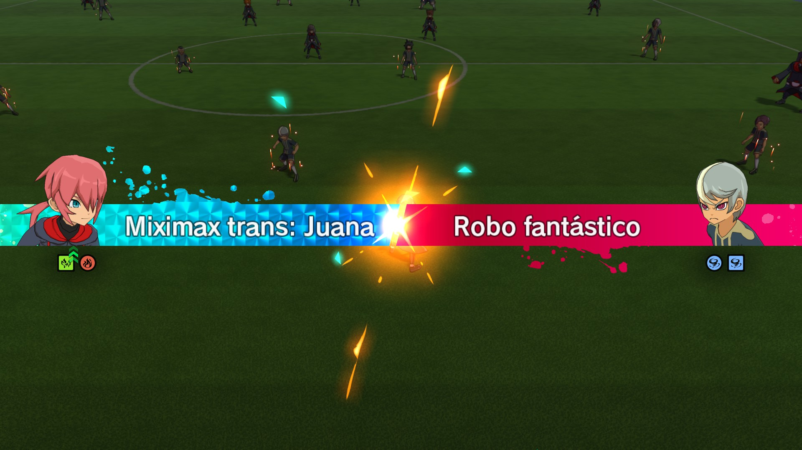
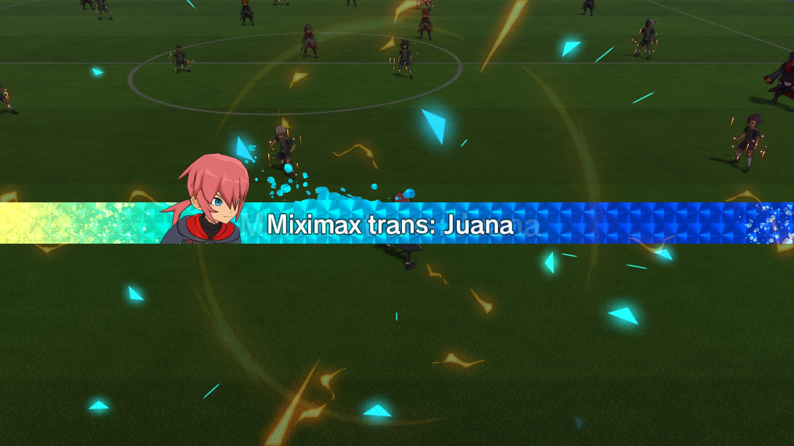
-2 Espíritus guerreros (Keshin)
Los espíritus guerreros son un tipo de hipertécnica que otorga tres ventajas:
-1 Aumenta el AT y la DF del usuario en +40%
-2 Le otorga la técnica de EG al usuario
-3 Activa una pasiva que afecta a todo el equipo.
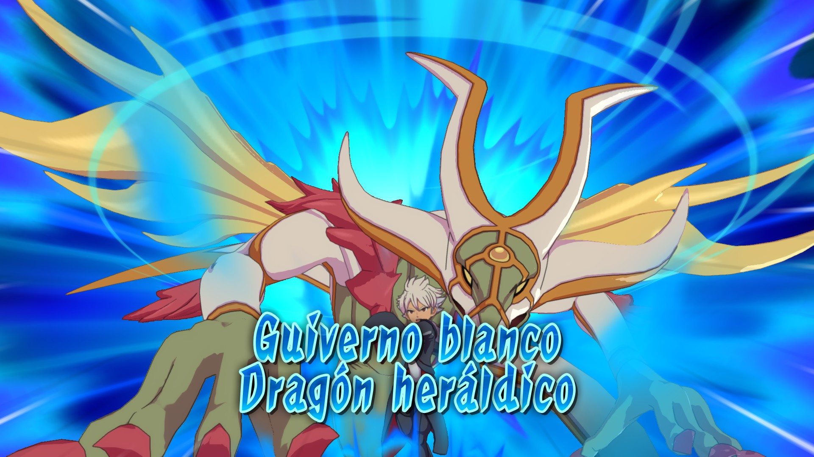
Son considerados meta junto a los despertares gracias a las pasivas, ya que algunas permiten mejorar cosas muy absurdas como el tiro del equipo. Estos se pueden obtener naturalmente en jugadores que ya los posean o por medio de la tienda de espíritus, donde se desbloquean más conforme avanzas el modo crónica y terminas la historia principal.
-3 Miximax
Los miximax son un tipo de hipertécnica que otorga dos ventajas:
-1 Aumenta el AT y la DF del usuario en +50%
-2 Le otorga al usuario la técnica del miximax
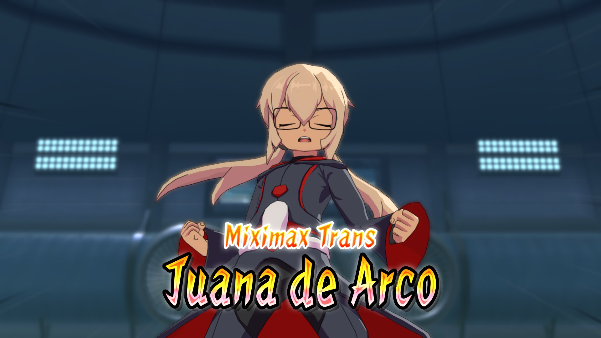
No son meta de momento porque hasta donde sabemos, solo es posible obtener miximax de los jugadores que lo obtienen naturalmente, así que salvo casos contados no tienen aplicación.
-4 Armaduras
Las armaduras son un tipo de hipertécnica que otorga dos ventajas:
-1 Aumenta el AT y la DF del usuario en +20%
-2 Aumenta el poder de las supertécnicas
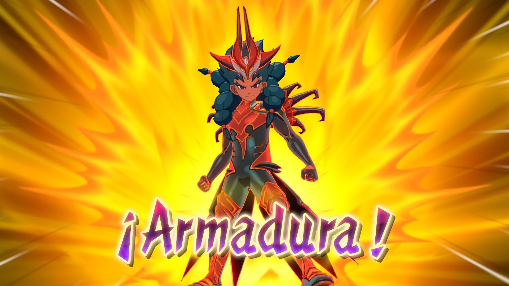
Estas al igual que los miximax, no son meta, no se pueden obtener fuera de los jugadores que la obtienen naturalmente y terminan siendo de poca utilidad.
-5 Tótems
Los tótems son un tipo de hipertécnica que otorga tres ventajas:
-1 Aumenta el AT y la DF del usuario en +25%
-2 Le otorga una técnica de Tótem al usuario
-3 Aumenta el AT y la DF +10% por cada duelo ganado mientras el tótem esté activo
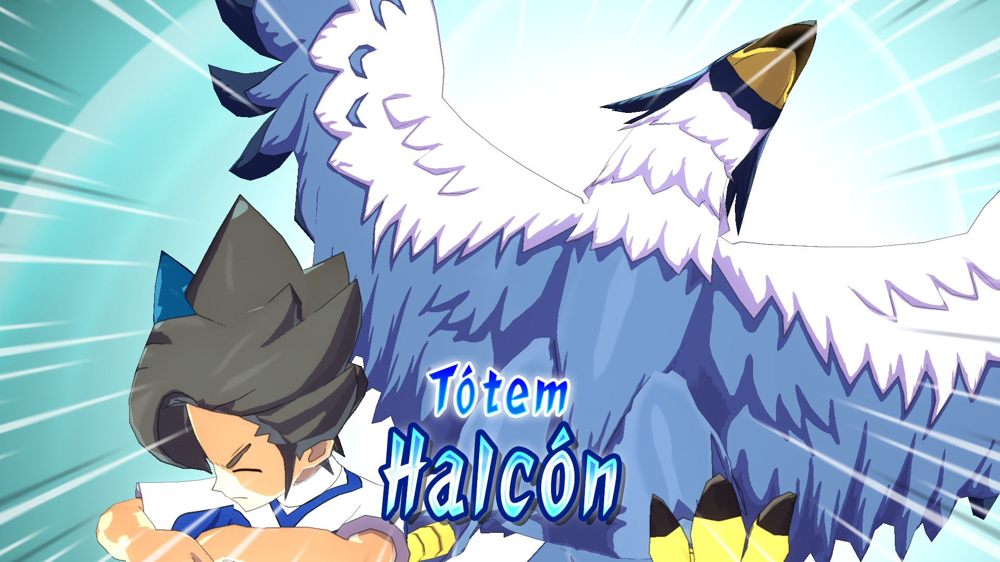
Los tótems no se están viendo tanto en el meta debido a que las mejoras de los despertares y espíritus guerreros son más confiables.
-6 Bond transform (Transformación de vínculo)
El bond transform es una hipertécnica que te permite transformar a tu jugador temporalmente en otro, no se puede activar en duelos, esta te da dos ventajas:
-1 Aumenta el AT y la DF del usuario en +10%
-2 Reemplaza temporalmente al usuario por el personaje en el cual lo hayas transformado con la excepción de las pasivas
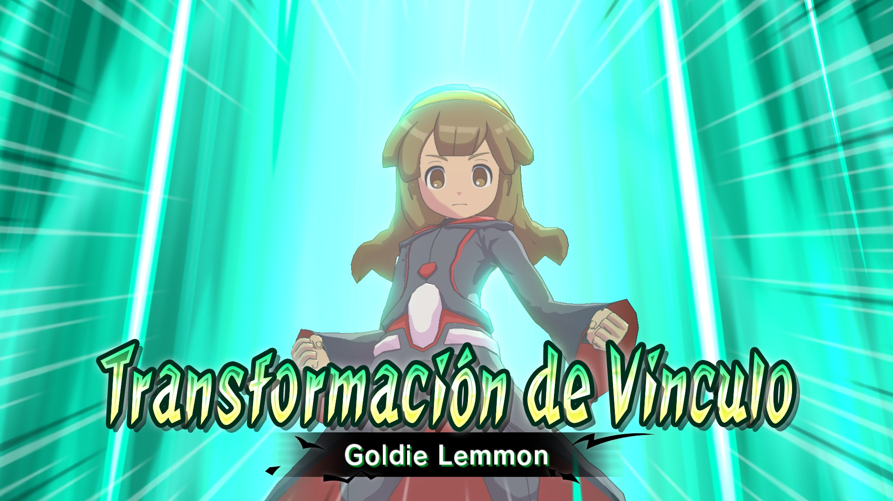
Esta hipertécnica es bastante mediocre, ya que la mejora es poca, no puede ganarte duelos y de nada te sirve duplicar a un jugador si ya tienes a ese jugador en el campo.
-7 Despertares
Los despertares son un tipo de hipertécnica que varía muchísimo entre cada tipo de despertar. De forma general comparten dos ventajas:
-1 Aumentan el AT y la DF del usuario en +30%
-2 Aumentan la velocidad del usuario
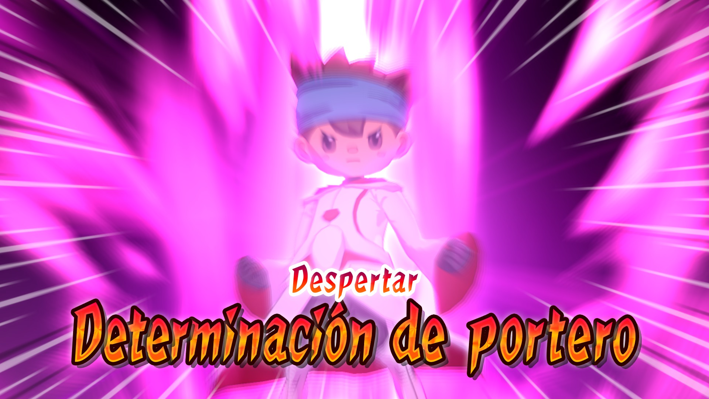
Hay diferentes tipos de despertares:
Sobrecarga ardiente
Este despertar aumenta la potencia de tiro en un +20%
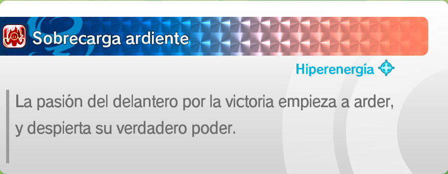
Catalizador elemental
Este despertar aumenta la potencia de los focos en un 20%
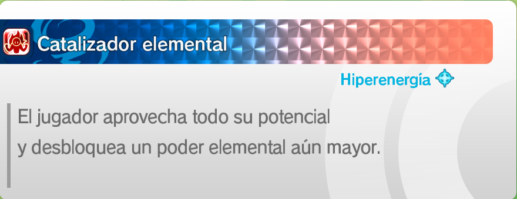
Guardián Férreo
Este despertar aumenta la DF y el muro en un +20%
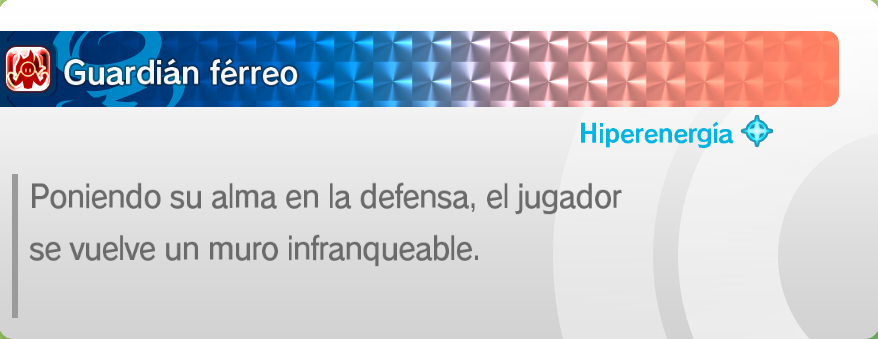
Determinación de portero
Este despertar aumenta la vida (PP)del portero en un 20%
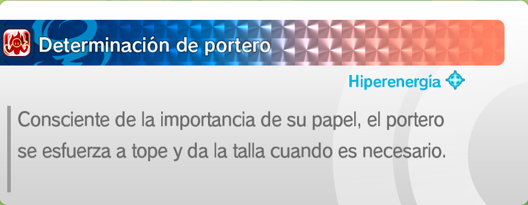
Impulso temporal
Este despertar aumenta la potencia de los focos en un +20%
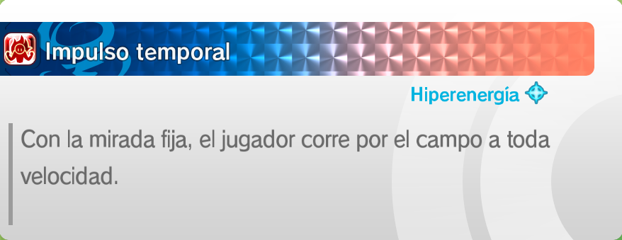